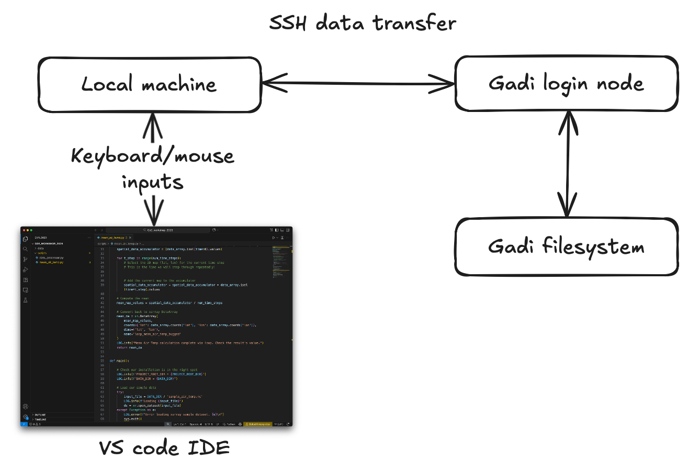
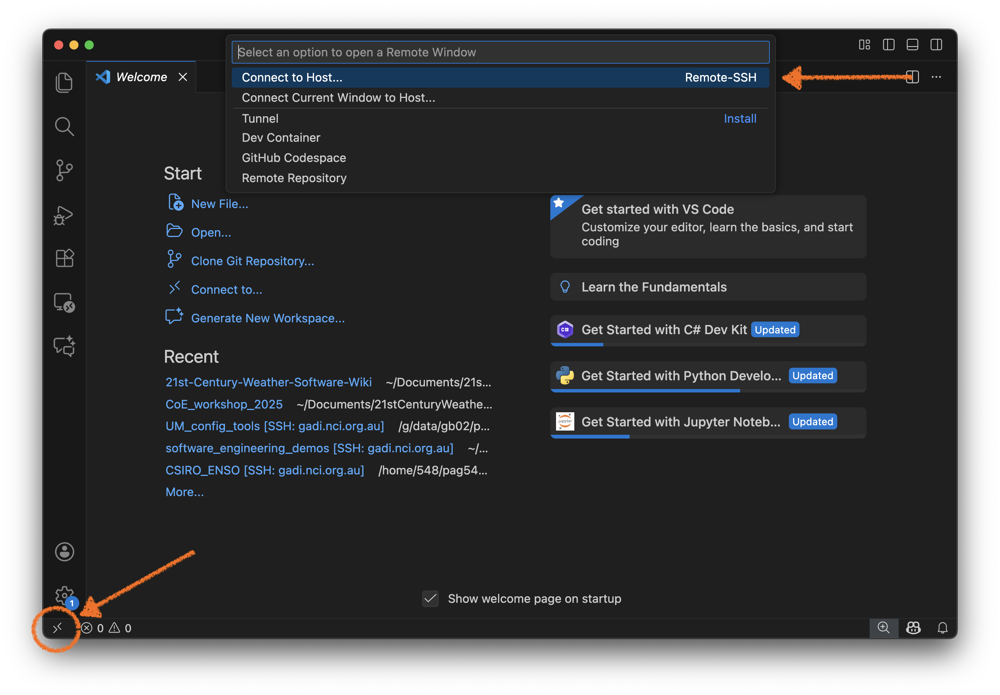
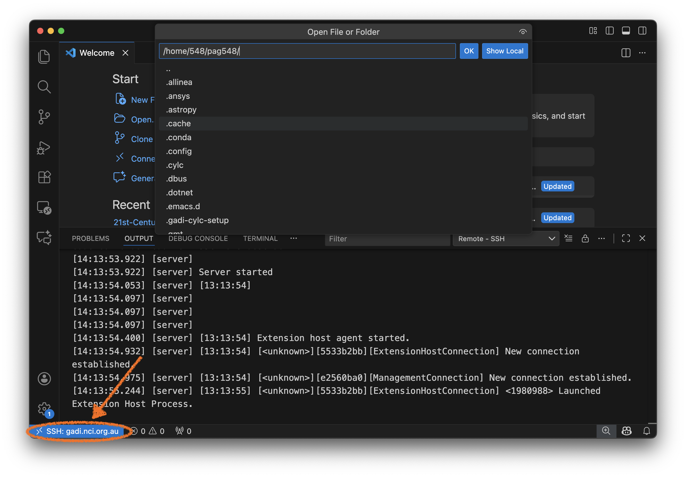
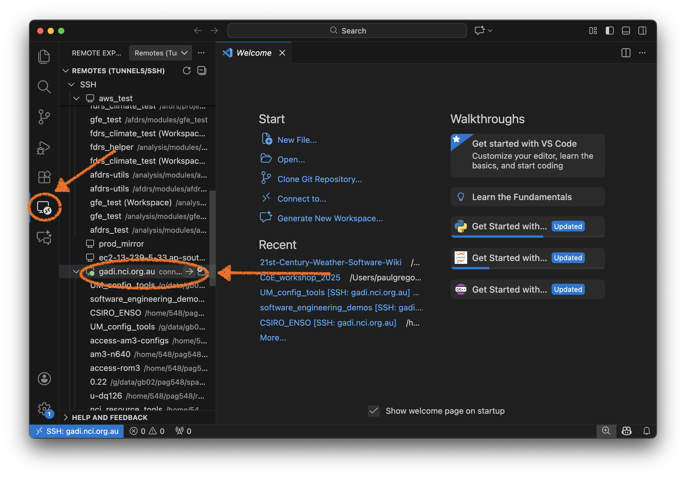
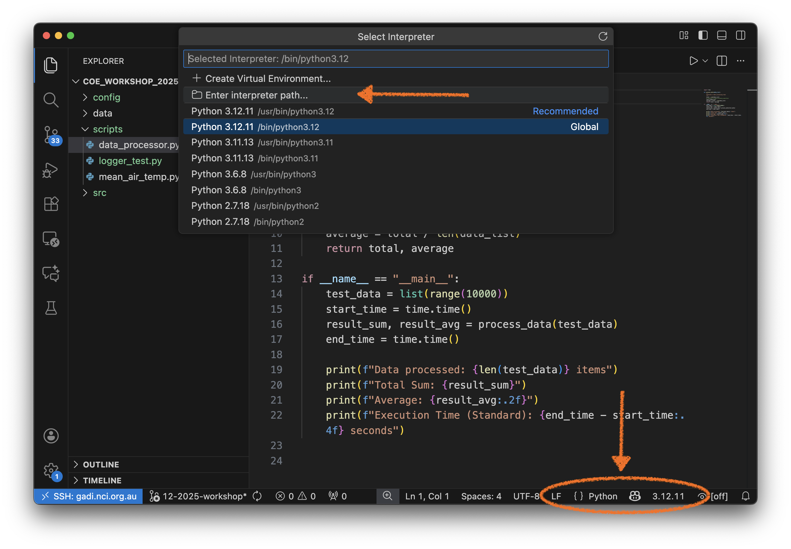
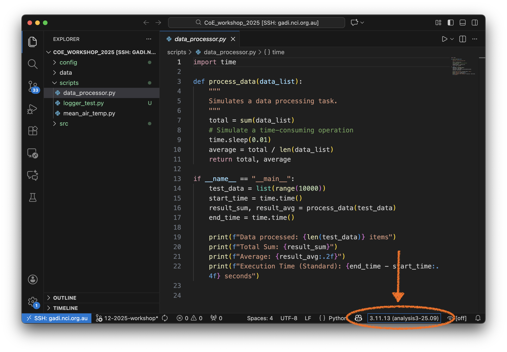

Running VSCode on gadi#
The Centre of Excellence for Weather of the 21st Century relies significantly on the NCI supercomputer (gadi). Can we apply our new skills with Python code development using VSCode on gadi?
Yes! But not in the way you think.
We will not install VSCode on gadi and use an X-window session to drive the VSCode GUI via a network connection. Such a method can be very slow. Rather, we will use a neat feature of VSCode called ‘Remote-SSH’.
What is SSH?#
If you’re not familiar with SSH (‘Secure Shell’), it’s a protocol for sending network traffic over an unsecure (i.e. open) network. It relies on the creation of pairs encryption keys to ensure the credentials of a user sending and receiving traffic from a client machine to a server.
VSCode can use this protocol so that you run the GUI on your local machine (client) and write and develop code on a remote machine (server).
To do this, it is recommended to configure your ssh on your local machine to communicate with gadi without using a password.
If you haven’t done this before, please read these guidelines.
https://opus.nci.org.au/spaces/Help/pages/130842757/Using+SSH+keys
https://docs.access-hive.org.au/getting_started/set_up_nci_account/
These steps will create set up a pair of encrypted ssh keys between your local machine and gadi so that you can transmit data securely.
You will need to install the following VSCode extensions:
Remote - SSH: Editing Configuration Files: This extension helps you manage your SSH configuration files, making it easier to set up and maintain connections to remote servers.
Below is a schematic of how the overall system works.

Connecting VSCode to gadi#
Once you’ve completed the following:
Configured your local
sshconnection to accessgadiwithout a passwordInstalled the
sshextensions for VSCodeCloned the 21centuryweather/software_engineering_demos repository to a disk on gadi
We can repeat the previous exercises, using the Remote-SSH connection.
You can connect to gadi via VSCode using a variety of methods.
Click on the bottom-right corner to activate a new Remote window. Select
Connect to Hostfrom the pull-down menu.

Select, or type gadi.nci.org.au your Host (depending if you’ve defined it in your local ~/.ssh/config file)
Your VSCode output console should show a similar output. Then click on Open Folder and navigate to the folder where you cloned the software_engineering_demos repository.

Note the blue status bar in the bottom left corner will change when you have successfully connected.
If you have the Remote Explorer extension, you can click on its icon on the left hand vertical taskbar and then select any hosts defined in your local
~/.ssh/configfile.

You skip straight to the central pull-down menu (which is actually the
Command Palette) by typingCtrl+Shift+P(orCmd+Shift+Pon Mac) and type“Remote-SSH: Connect to Host…”TheCommand Palettewill auto-complete any command once you start the first few characters.
Once you’ve loaded the CoE_Workshop_2025 folder you will need to load a Python environment. As before, click on the Python interpreter menu in the bottom right, and then select Enter interpreter path. Typically you will enter the path to one of the xp65 analysis packages, e.g. /g/data/xp65/public/apps/med_conda_scripts/analysis3-25.09.d/bin. (You can of course, choose any Python interpreter you like.)

The Python interpreter menu will update if it has successfully found the path to the Python interpreter you need.

Or, you instead of clicking, you can jump straight the Command Palette and start typing "Python: Select Interpreter".
Note
You can also access the Command Palette by clicking on the Settings ‘Cog’ or ‘Gear’ in the bottom of the left hand vertical taskbar.
Now you should be able to complete all the exercises we did on your local machine, on gadi!
Note
Remember to alter your launch.json file if you want your VSCode interactive Python session to use IPython.
Did you find any difference in how VSCode behaves on your local machine, and on gadi?
If so - this ACCESS-Hive forum post provides some answers.
The Pylance extension can consume a lot of resources as it walks through the file system finding the definitions of all functions in your project. This can create a significant load on the gadi login node. So some VSCode processes on gadi are restricted.
Further information#
The official documentation for the VSCode Remote SSH extensions is here